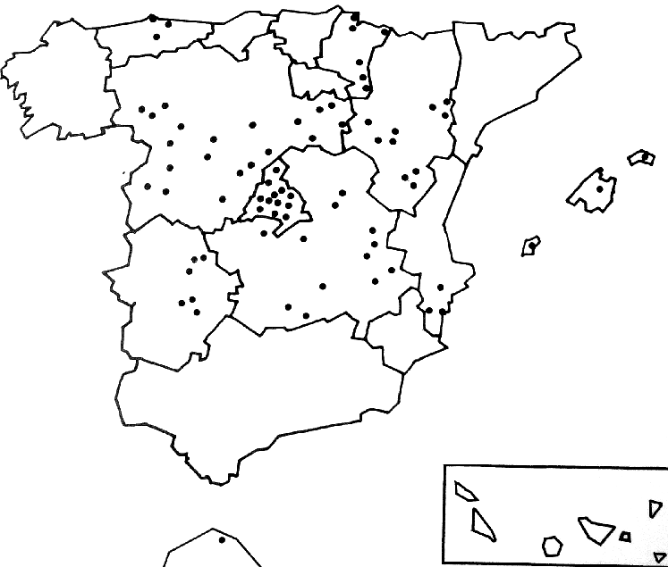
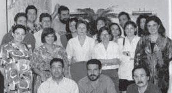

Origen y evolución de los centros del profesorado.
Principios de los 80
Ya existían los CAIRE (Círculos de Estudio e Investigación para la Renovación Pedagógica), estos evolucionaron a los CEP en el RD 2112/1984 con el criterio de acercar las instituciones, descentralizar el sistema y fomentar el protagonismo del profesorado en su propia formación, a imitación de los Teachers Centers (UK) y centros pedagógicos (Noruega).
Paralelamente se constituyen los Centros de Recursos y Servicios de Apoyo Escolar en el RD 1174/1983 debido a la escasez de medios en el mundo rural por la concentración de la escolarización en la LGE de 1970.
En esta viñeta de la época se puede ver el cambio de “filosofía” que se pretendía de CAIRE a CEP:

En una primera etapa 1984-1989 se crearon los CEPs que se muestran en el mapa, dentro de las competencias del MEC:

Pero para llegar a toda la extensión se crearon las modalidades experimentales de “la extensión” aquí vemos la placa en el caso de Calamocha:

En una segunda etapa 1989-1993 el MEC presentó varios documentos que destacamos aquí unas líneas porque son la filosofía de los Centros de Profesorado:
- Formación basada en la práctica profesional: La formación requiere partir de una reflexión del profesor sobre su propia práctica que le permita repensar su teoría implícita de las enseñanza, sus esquemas, sus maneras de proceder y sus actitudes.
- El Centro docente como eje de la formación permanente. La adopción de un diseño curricular abierto implica la elaboración de Proyectos Educativos y Proyectos Curriculares de Centro. Esto exige equipos de Profesores que rompan con el individualismo, que intercambien experiencias y en suma, que conciban la formación permanente como una parte de su actividad profesional ligada a la labor de innovación educativa en el marco de sus propios centros.
- Formación a través de estrategias diversificadas. Para ello es necesario contar con las Universidades, empresas e instituciones. para desplegar un amplio abanico de propuestas y modalidades formativas.
- Formación descentralizada. Consiste en una estrategia de consolidación de niveles escalonados de decisión, generando procesos adaptados a cada zona mediante una fuerte participación en cada CEP de las estructuras provinciales y de los propios usuarios de la formación.
Plan anual de la Subdirección General de la formación del Profesorado 1990Plan de Investigación Educativa y Formación del Profesorado
El RD 1992 regulaba el funcionamiento de los CEPs, el reconocimiento del Equipo Pedagógico, las funciones y competencias de los consejos, procedimientos de elección, acceso a la dirección, creación del vicedirector y secretario y la duración del mandato de cada uno de ellos.

Los CEPs estaban configurados en cuatro módulos:
- Módulo A: Más de 3.000 profesores adscritos, con una plantilla de 13 asesores de formación.
- Módulo B: Entre 1.501 y 3.000 profesores adscritos o en capital de provincia, con una plantilla de 11 asesores.
- Módulo C: Entre 601 y 1.500 profesores adscritos con una plantilla de 8 asesores.
- Módulo D: Hasta 600 profesores adscritos con una plantilla de 6 asesores de formación.
En esta etapa destaca el elevado número de actividades, calidad y afianzamiento de las línea de Formación en Centros.

CEP Teruel.
En esta etapa también se regula los Centros de Recursos (Resolución 6/6/1990 DGFPyPE) donde se tipifican en:
- Módulo 1 atienden a menos de 13 unidades rurales y tiene 2-3 profesores.
- Módulo 2 atienden a 13-18 unidades rurales y tiene 3-4 profesores asignados.
- Módulo 3 atienden a más de 18 unidades rurales y 4-5 profesores.
Los perfiles de los profesores asignados son maestros especialistas en idioma inglés, educación física y educación infantil, incluso PET. Si conoces la educación en el mundo rural, puedes adivinar que estos centros de recursos son la antesala de la creación de los CRAs y de los CRIE.
La existencia de estas dos redes no se sustentaba con las nuevas reformas LOGSE (1989-1994) lo que llevaría a una nueva etapa:
Tercera etapa 1994 - 2012.
Fue en esta época cuando se reorganizaron y unificaron las dos redes,creando los Centros de Profesores y Recursos, ahora la tipología cambia a:
- CPR de Tipo 1: de ámbito rural.
- CPR de Tipo 2 si hay centros que imparten enseñanzas de régimen especial
- CPR de Tipo 3 en zonas urbanas y alta concentración de centros.
También se aprovechó para crear muchas extensiones en CPRs independientes. En Aragón la lista de CPRs era la siguiente:
- FRAGA
- GRAUS
- HUESCA
- MONZON
- SABIÑANIGO
- ALCAÑIZ
- ANDORRA
- CALAMOCHA
- TERUEL
- UTRILLAS
- CALATAYUD
- CASPE
- EJEA DE LOS CABALLEROS
- LA ALMUNIA DE DOÑA GODINA
- TARAZONA
- JUAN DE LANUZA
- Nº1 DE ZARAGOZA
En esta etapa se crea la formación online en Aularagon, gestionada al principio por los Asesores TIC de cada CPR.
Cuarta etapa 2013-2017 Se cambia de esquema de los CPRs a CIFEs (BOA 20/11/2013) creando los siguientes CIFEs territoriales con sus correspondientes UFIs y se añaden dos específicos a la red:
- CIFE ANA ABARCA DE BOLEA - HUESCA
- CIFE ÁNGEL SANZ BRIZ - TERUEL
- CIFE MARÍA DE AVILA - ZARAGOZA
- CIFE JUAN DE LANUZA- ZARAGOZA
- CATEDU
- CAREI
Y en el 2016 se crean otros 3 cifes y se incorporan otros específicos a la red de formación:
- CIFE SABIÑANIGO
- CIFE EJEA DE LOS CABALLEROS
- CIFE ALCORISA
- CIFPA
- CARLEE
Recomendaciones: Monográfico 35 A 3 bandas sobre formación del profesorado.